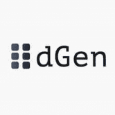

dev DeFi #dev DeFi 旨在帮助用户以低借贷利率借入 BSC 资产并为其抵押品收取利息。 #dev DeFi 在币安智能链上完全去中心化和开源。去中心化治理将很快发生，其中 DEV 代币将在治理
Devcash Devcash 赏金平台是一个去中心化的赏金平台，用户利用 DEV 众包开发者人才或执行开发者任务并赚取 DEV。 Blockchain Developers United 是一个开发者经济平台，结合了线下和在线聚会、
DeversiFi DeversiFi 唯一的高速去中心化交易所，交易者可以直接从其私人钱包的安全性中执行任何规模的订单。到 2020 年 3 月成为第一个由 StarkWare 提供支持的交易所。使用 Dever
Devil Dice 你可以滚动野兽的数量来收集大奖吗？ #Play Devil Dice 赢取大奖。累积奖金随着每次投注而增加。 滚下 滚动超过 100 且低于 300 即可获胜。 奖品：赌注 x 2 滚下 滚动超过 700 且
Devil Finance 什么是恶魔金融？ 本质上，Devil Finance 是一个去中心化收益优化器平台，允许其用户从他们的加密资产中赚取复利。 Devil Finance 在 Fantom 区块链上运行，并提供领先的市
Devils Wheel DevilsWheel 是一款运行在 Polygon(Matic) 网络上的去中心化欧式轮盘游戏。该游戏提供了一个向所有人开放的赌注池。所有投注均在 Polygon 上的 DAI 稳定币中进行。使用的随机数生成器是 Chainlink
DEX.AG DEX.AG 是一个 DEX 聚合器，它搜索 11 种不同的 DEX，为您的交易提供最优惠的价格。它可以免费使用，适合移动设备使用，并且有多种可用的代币。 DEX.AG 的 X Blaster 功能将
DexGuard DexGuard 是一种 bloXroute 产品，为 Uniswap 和 Sushiswap 上的交易提供可靠且价格合理的前置保护。 您通过 DEX 提交的每笔交易都容易受到抢先攻击和三明治攻击——尽管交易规模越大，遭受
Dexsport Dexsport 是一个创新项目，它改变了用户对投注的看法。该平台是一个 DeFi 预测平台，包括：体育博彩、盈利投注、预测市场、P2P 加密货币汇率预测和 NFT 收集。 Dexsport 生
Dexter Dexter 是 Tezos 区块链上的去中心化、非托管交易所，使用户能够将他们的 XTZ（Tezos 的本地货币）与基于 Tezos FA1.2 代币标准构建的其他代币进行交换。 Dexter 还允许任
DFinance 让我们D！币安智能链上排名第一的 AMM 和收益农场。 Dfinance 使您能够使用自然语言工具创建和交易您自己的基于区块链的金融工具。 集成 Dfinance 与许多平台合作伙伴集成
dForce Trade dForce Trade 是 dForce Network 推出的去中心化交易平台，用于促进大多数采用 ERC-20 标准的稳定币的即时交换，价格滑点为 0%，包括 USDx、HUSD、BUSD、USDT、U
DFSocial Gaming DFSG 是一个 De-Fi 游戏平台。 Game-Fi 是区块链的最新趋势，除了资产的价格升值，游戏还被用来创造额外的利润流。将加密货币和视频游戏结合起来，让游戏玩家有机会通
dFuture dFuture 是一种基于外部报价和动态交易费用的衍生品交易协议，使用 QCAMM（Quoted Price and Constant Sum Based Automated Market Maker）。 dFuture 的核心设计是零无常损耗和零滑点
Dfyn Network Dfyn 是目前在 Polygon 网络上运行的多链 AMM DEX。各种链上的 Dfyn 节点充当由路由器协议启用的跨链流动性超级网格的流动性入口和出口点。 跨链桥梁是生态系统增长的
 dGenesis dGen Automatons dGen 自动机是二维循环元胞自动机的一种变体；离散时间确定性系统的实现，其中基于整数的晶格根据定义单元邻域的算法改变状态。由此产生的图像是生成艺术
Diamond Boyz Coin DBZ Coin 旨在成为真品珠宝购买支付和验证的领导者，并为全球更快的汇款系统设定标准。通过引导用户了解如何获得 Diamond Boyz Coin，也向他们介绍了一种以有趣且
Diamond Mine X100 Diamond Mine x100 是一个资源丰富的矿山，刚刚被少数冒险家发现。 该矿延伸一千英里，您现在可以租用一块土地并雇佣矿工，不间断地为您开采钻石。 开采钻石，赚取 MATIC
Diapers Finance 持有证明 (PoH) 是权益证明的一种新的替代概念，您可以在持有代币至少 24 小时后领取奖励。 整个 ShitPlanet 中只有 100 个 $DYPR 代币。 10 $DYPR 被锁定为在 DEXshit 上交易的初始 LP。剩余
Dice Planet 骰子星球是一款链上骰子游戏。 Dice Planet 基于 ThunderCore 上的随机数生成器，完全建立在链上。完全公平和有趣。 我们是 Mini Planet Dice，我们很高兴推出我们的第一个 Kic
DIG for IT! DIG for IT 是一个 TRON 区块链游戏平台，您可以在其中玩并赚取 TRX。我们赚取加密货币的 TRON 区块链游戏是使用 Unity3D 构建的，以最大限度地提高游戏体验，将区块链游
Diggers World Diggers World 是一个具有深思熟虑的经济模型的 NFT 项目。玩家自己选择游戏策略，同时有机会赚钱。 获取各种资源，制作工具并升级它们。在采矿中试试运气，获得独家
DigiLotto 边玩边捐款，我们相信通过 DigiLotto 旗下的各种可持续和慈善计划来支持我们服务的社区，并赋予我们作为 DigiLotto 核心的人民的权力。 DigiLotto 是我们如何实施区块链的另一个很
DIGITAL Collectibles 受音乐启发的艺术！随着每首新歌的发布，开始构建您的 DIGITAL Cassette Collection。数字收藏品是虚拟物品的独特或限量版副本。通常有视觉元素，例如数字
Digital Media Tokens 数字媒体代币或 DMT 是奖励给 CULT.Today 读者的注意力代币。 CULT 是加密城市自由主义思想。我们涵盖每日加密新闻和分析。 CULT 获得的广告收入将作为 div 与具有 TronLink 扩展的读者
DigitalArt 以太坊区块链上的世界上第一个区块链网站 NFT 收藏品市场现在可在 L2（第二层）Polygon 的区块链上使用。运营发展中的虚拟经济 DigitalArt.Crypto 代币“DANL”
DIGITALAX DIGITALAX 是用于 Web3 时尚和开放元界的去中心化和可分叉协议栈。 DIGITALAX 在这里证明了 web3 时尚是将数百万新用户带入 web3 的缺失桥梁。我们已经建立了一个涵盖数字和实体时尚


")


 是一个专门的网站")
, 000 to 999 (3D) and 0000 to 9999 (4D).")